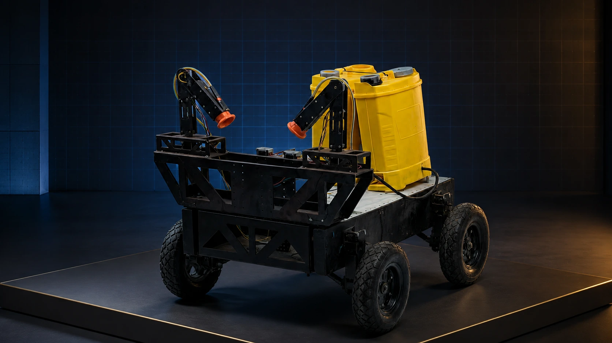
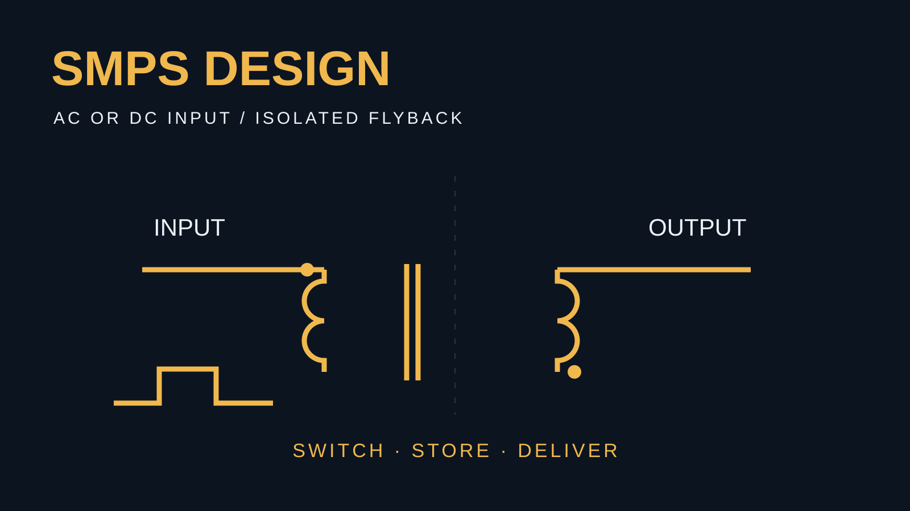

HARDWARE. SOFTWARE. THE CONNECTION BETWEEN.
PORTFOLIO / ENGINEERINGفكّك المشكلة
From a signal.
To something
that works.
I’m Ahmed Asl. I build connected systems—from embedded electronics and robotics to the interfaces that make them useful.
Explore my work ↗Or try the workbench below ↓
AGRIBOT / AI-STYLED PROJECT COVERAgriBot↗
Agricultural robotics.
Connected from field to interface.
The physical platform brings the electronics, mobile chassis, and agricultural hardware into one system.
Read the project ↗DON’T JUST READ ABOUT IT
Give the system
something to respond to.
Move the input. Follow the decision.
See the output change.
A small example of how I think and build.
A physical signal
A simple rule
If the signal reaches the threshold, enable the output.
A visible response
Below the threshold.
The output stays disabled.
TAKE IT FURTHER
Open a real tool.

See where the energy goes.
Explore the switching phases of an isolated flyback supply, with calculations and component explanations.
Open SMPS Designer →Understand it. Then design it.
Explore amplifiers, filters, timers, and tuned circuits through interactive schematics and readable equations.
Explore circuit tools →